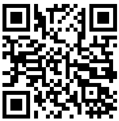

デバイスを表面に平らに置きます
ほとんどのコンピュータには必要なセンサーがありません。モバイルデバイスで続行するには、QRコードをスキャンしてください。

このオンライン傾斜計を使用して角度を測定する方法
このオンライン傾斜計は、スマートフォンやタブレットに内蔵されているセンサーを使用して、表面の角度（傾斜、ピッチ、ロール）を高精度で測定するために設計されたWebベースのアプリケーションです。 ソフトウェアのインストールを必要とせずに、お使いのデバイスを強力なデジタル水準器、気泡水準器、または傾斜計に無料で変身させます。すべてがWebブラウザで直接実行されるため、 どこでも簡単に角度や傾斜を測定できます。角度の測定、傾斜の測定、またはピッチとロールの確認に信頼できるツールとして使用してください。
コア機能
- リアルタイム角度測定: センサーへのアクセスを許可して開始を押すと、アプリケーションはデバイスの加速度センサーとジャイロスコープからデータを読み取り、リアルタイムでピッチ（X軸）とロール（Y軸）の角度を計算します。これにより、即時の角度測定と傾斜測定が可能になります。
- 高精度気泡水準器: 中央のグラフィックインターフェイスには、デバイスの傾きに基づいて動く仮想の気泡があり、完璧な水平を達成するための直感的な視覚的ガイドを提供します。ブラウザで使える無料の傾斜計です。
- ゼロ校正: ゼロボタンを使用すると、任意の表面を基準点（0度）として設定できます。これは、絶対的な水平ではなく、ある表面を別の表面に対して測定する場合に便利です。ブラウザツールでのあらゆる角度に対応する完璧な機能です。また、突出したカメラなど、モバイルデバイスの凹凸を調整するためにも使用できます。
- 視覚を使わない水平調整: 設定で音声フィードバックを有効にすると、完璧な水平が達成されたときにデバイスがビープ音を鳴らし、画面を常に監視することなく表面を水平にすることができます。
免責事項：精度の理解
このツールは傾斜を測定する便利な方法を提供しますが、一般的なスマートフォンのセンサーは計測グレードの角度測定用に設計されていないことにご注意ください。 センサーの品質、デバイスの校正、さらには携帯電話のケースの小さな隆起などの要因が誤差を生む可能性があります。多くのDIYや趣味の作業では、精度は十分すぎるほどです。 ただし、認定された精度を必要とする専門的な用途では、専用の校正済み水準器をお勧めします。このツールは、ほとんどの日常的なニーズに対して信頼できる角度測定を提供します。
測定精度を向上させる方法
簡単な2段階の校正方法を使用することで、傾斜測定の精度を大幅に向上させ、センサーのバイアスを補正できます。 このプロセスは、より高い精度で角度を測定する必要がある場合に、携帯電話固有のゼロオフセット誤差のほとんどを効果的に相殺します。
- 最初の測定: 測定したい表面に携帯電話を置き、角度の読み取り値を記録します（例：8°）。
- 2番目の測定: 持ち上げずに、携帯電話を同じ場所で正確に180°回転させ（元の位置と「真っ向から」向き合うように）、2番目の読み取り値を取ります（例：10°）。
- 真の角度を計算する: 真の角度は、これら2つの測定値の平均です。例：（8 + 10）/ 2 = 9°。これがブラウザでのより正確な傾斜です。
180°回転法を使用してセンサーエラーを相殺し、より正確な角度測定を実現します。
「ゼロ」校正の実行方法
ゼロ校正を使用すると、現在の表面を新しい基準点（0度）として設定できます。これは、相対的な角度を測定したり、凹凸のある表面を補正したりするために不可欠です。 方法は次のとおりです。
- デバイスの配置: スマートフォンまたはタブレットを、0°の基準として指定したい表面にしっかりと置きます。
- 安定させる: デバイスが安定していて動かないことを確認します。
- 校正のためにゼロを押す: 傾斜計インターフェースのゼロボタンをタップします。
- 新しいベースライン: 現在のピッチとロールの読み取り値が即座に0°にリセットされ、この向きが後続のすべての測定の新しいベースラインとして確立されます。
ゼロ校正は、現在の表面を0°の基準として設定し、相対的な角度測定を可能にします。
突出したカメラの調整
現代のスマートフォンには、完全に平らに置くことを妨げるカメラの隆起がしばしばあります。これは正確な測定を妨げる可能性がありますが、以下に示すようにゼロボタンを使用して簡単に修正できます。
- 配置して観察: 携帯電話を表面に置きます。カメラの隆起がわずかで安定した傾きを生み出し、ゼロ以外の読み取り値を示すことに注意してください。
- ゼロを押す: ゼロボタンをタップします。これにより、傾斜計は電話の現在の傾いた位置を新しい「0°」の基準点として扱うように指示されます。
- 正確に測定: ディスプレイには0°が表示されます。カメラの隆起の影響が相殺され、表面に対して正確な測定を行うことができます。
カメラの隆起によって引き起こされる傾きを補正するには、「ゼロ」を使用します。
当社の傾斜計の詳細な使用例
このブラウザベースの傾斜計は、多くのタスクでピッチとロールを測定するための多目的なツールです。
- 建設と大工仕事: この傾斜計を使用して、壁が完全に垂直で床が水平であることを確認します。屋根を組むときは、垂木が正しい角度で切断され、設置されていることを確認するためにピッチを測定します。パティオや通路の排水のための適切な勾配を設定するのにも最適です。
- 太陽光パネルの設置: 発電を最大化するには、太陽光パネルを緯度と季節に基づいて最適な傾斜角に設定する必要があります。このツールを使用して設置中にピッチを正確に測定し、パネルが最高の効率を得るために太陽に対して正しい向きになっていることを確認します。
- DIYと家の改善: 毎回額縁を完全にまっすぐに掛けます。家具を組み立てたり、キッチンキャビネットを設置したりするときは、傾斜計を使用してすべてが水平であることを確認します。また、不均衡や振動を防ぐために洗濯機などの電化製品を設置するときの勾配を測定するのに最適なツールです。
- 写真とビデオ撮影: このツールを使用して三脚でカメラを水平にすることで、傾いた地平線を避けます。これは、プロフェッショナルな結果を得るために直線が不可欠な風景、建築、パノラマ写真で特に重要です。
- 車両とRVのレベリング: 車両のサスペンションを変更した後、ドライブラインの角度を確認します。キャンプ中は、快適さのために、また電化製品（冷蔵庫など）が正しく機能することを確認するために、キャラバンやRVを水平にするために使用します。あらゆる車両設定に便利な傾斜測定ツールです。
- 配管と排水: 排水管を設置するときは、適切な流れのために一貫した緩やかな勾配が重要です。このオンライン傾斜計を使用して角度を正確に測定し、将来の詰まりや滞留水の問題を防ぎます。
よくある質問
センサーへのアクセスを許可し、「測定開始」を押して、デバイスを表面に置きます。傾斜計はピッチ（X軸）とロール（Y軸）の角度をリアルタイムで表示します。参照点を設定するには、「ゼロ」ボタンを使用します。
精度はデバイスの加速度センサーの品質によって異なります。DIYや趣味の作業には非常に正確です。専門的な計測グレードの精度には、専用の校正済み水準器をお勧めします。精度を向上させるには、180°回転校正方法を使用してください。
はい、すべてのセンサーデータはブラウザ内でお使いのデバイスで直接処理されます。当社のサーバーに情報が送信されることはありません。測定値は完全にプライベートです。
太陽光パネルの設置、建設、大工仕事、DIYプロジェクト、写真撮影、車両の水平出し、配管など、角度や傾斜の測定が必要なあらゆる作業に使用できます。
カメラの出っ張りがある状態で携帯電話を表面に置き、測定値を記録してから「ゼロ」ボタンを押します。これにより、カメラの出っ張りの影響が補正され、正確な測定が可能になります。
100%プライベートで安全
私たちはあなたのプライバシーを尊重します。すべてのセンサーデータは、ブラウザによってお使いのデバイス上で直接処理されます。サーバーに情報が送信されることは一切ありません。あなたの測定はあなた自身のものです。